Accuracy: 0.69 Mean Recall 0.69 Precision 0.695 F1 0.689 Target Recall 0.593 Precision 0.492 F1 0.538 Orig Pred Recall 0.83 Precision 0.785 F1 0.807
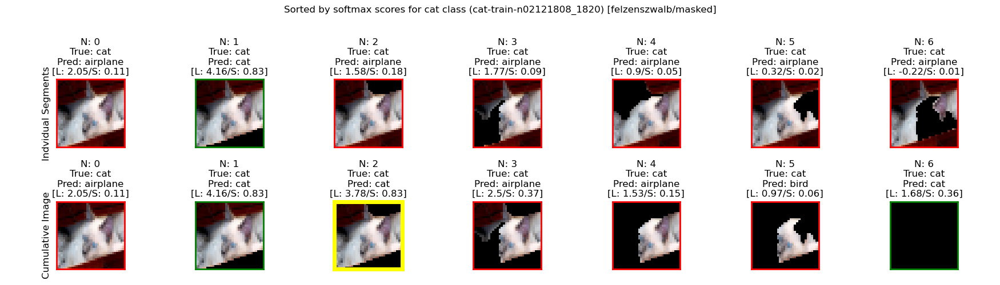

Accuracy: 0.688 Mean Recall 0.688 Precision 0.694 F1 0.685 Target Recall 0.585 Precision 0.514 F1 0.547 Orig Pred Recall 0.719 Precision 0.62 F1 0.666
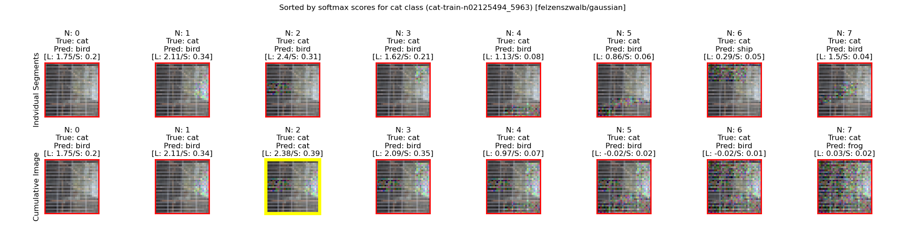

Accuracy: 0.687 Mean Recall 0.687 Precision 0.695 F1 0.687 Target Recall 0.561 Precision 0.509 F1 0.534 Orig Pred Recall 0.75 Precision 0.872 F1 0.806


Accuracy: 0.687 Mean Recall 0.687 Precision 0.694 F1 0.684 Target Recall 0.589 Precision 0.519 F1 0.552 Orig Pred Recall 0.571 Precision 0.636 F1 0.601

 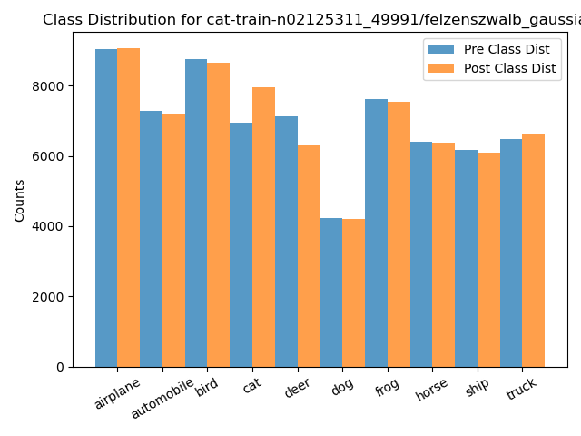
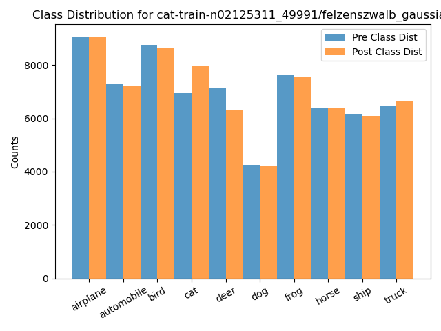
Accuracy: 0.687 Mean Recall 0.687 Precision 0.694 F1 0.684 Target Recall 0.587 Precision 0.516 F1 0.549 Orig Pred Recall 0.589 Precision 0.617 F1 0.603


Accuracy: 0.685 Mean Recall 0.685 Precision 0.695 F1 0.681 Target Recall 0.575 Precision 0.527 F1 0.55 Orig Pred Recall 0.387 Precision 0.751 F1 0.511


Accuracy: 0.684 Mean Recall 0.684 Precision 0.696 F1 0.68 Target Recall 0.602 Precision 0.505 F1 0.549 Orig Pred Recall 0.538 Precision 0.67 F1 0.597


Accuracy: 0.683 Mean Recall 0.683 Precision 0.7 F1 0.683 Target Recall 0.659 Precision 0.442 F1 0.529 Orig Pred Recall 0.583 Precision 0.63 F1 0.606


Accuracy: 0.679 Mean Recall 0.679 Precision 0.709 F1 0.682 Target Recall 0.722 Precision 0.406 F1 0.52 Orig Pred Recall 0.517 Precision 0.701 F1 0.595


Accuracy: 0.677 Mean Recall 0.677 Precision 0.699 F1 0.672 Target Recall 0.614 Precision 0.494 F1 0.548 Orig Pred Recall 0.317 Precision 0.825 F1 0.458
 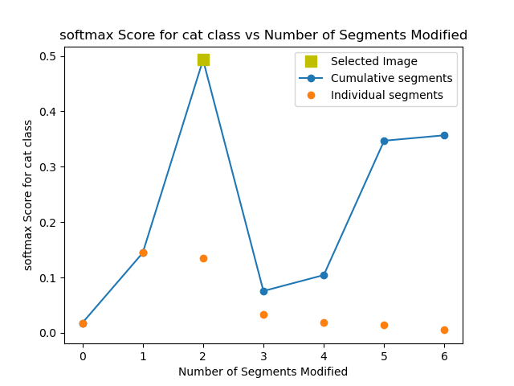
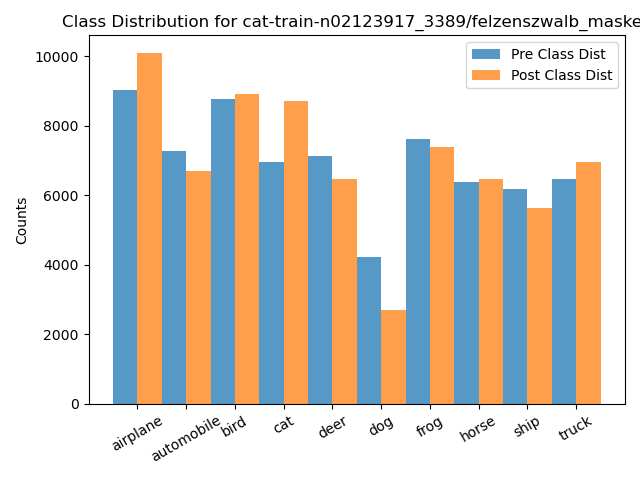
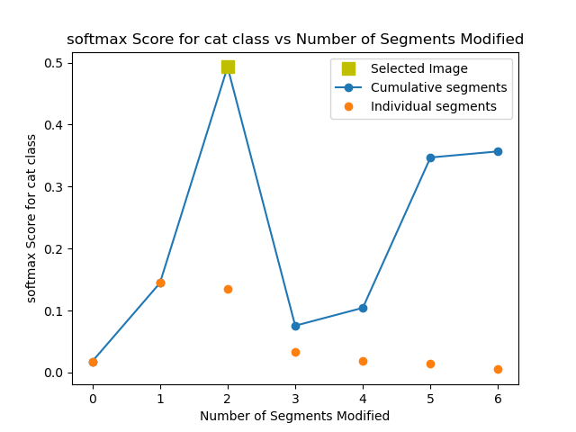
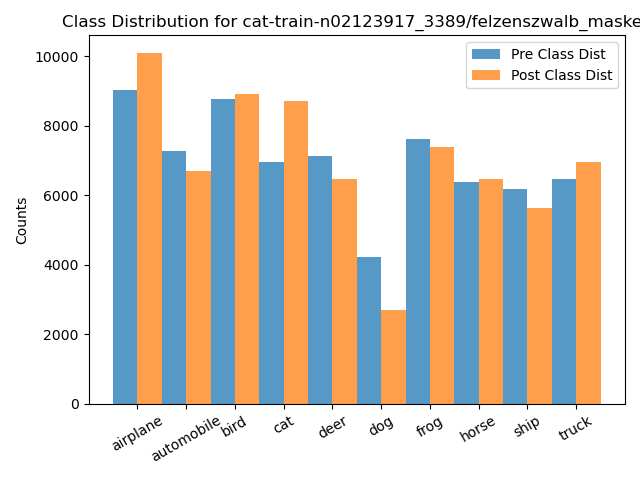
Accuracy: 0.677 Mean Recall 0.677 Precision 0.702 F1 0.677 Target Recall 0.642 Precision 0.474 F1 0.545 Orig Pred Recall 0.686 Precision 0.881 F1 0.771
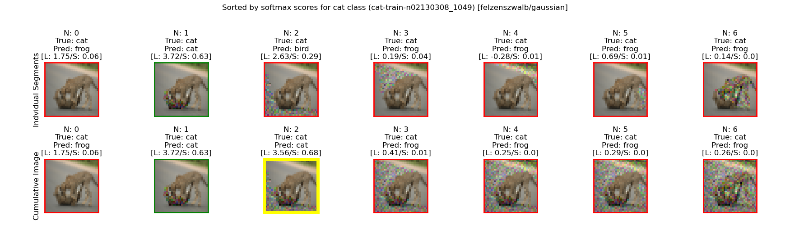 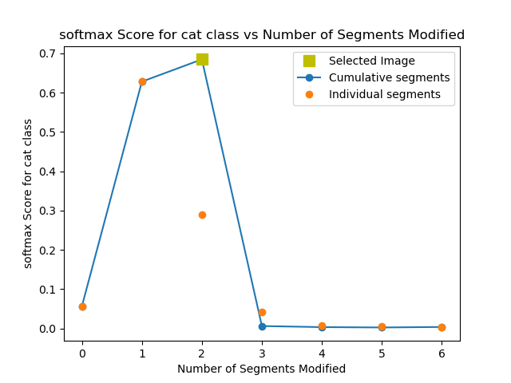
Accuracy: 0.676 Mean Recall 0.676 Precision 0.699 F1 0.669 Target Recall 0.6 Precision 0.491 F1 0.54 Orig Pred Recall 0.278 Precision 0.856 F1 0.42

 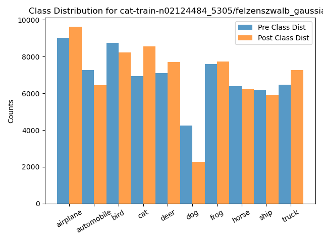
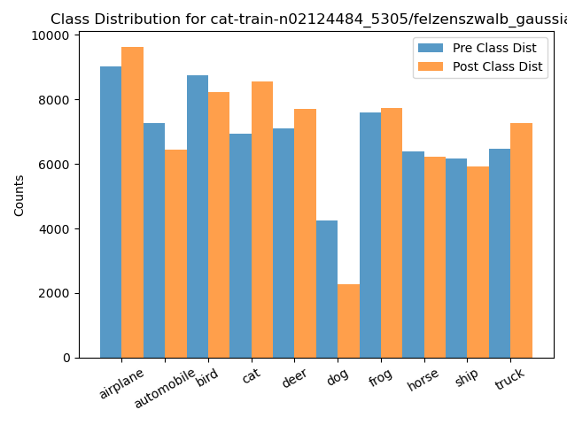
Accuracy: 0.675 Mean Recall 0.675 Precision 0.71 F1 0.679 Target Recall 0.728 Precision 0.405 F1 0.52 Orig Pred Recall 0.558 Precision 0.653 F1 0.602


Accuracy: 0.675 Mean Recall 0.675 Precision 0.701 F1 0.674 Target Recall 0.663 Precision 0.475 F1 0.553 Orig Pred Recall 0.456 Precision 0.753 F1 0.568
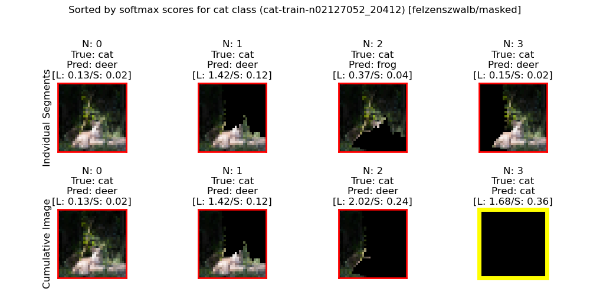

Accuracy: 0.674 Mean Recall 0.674 Precision 0.707 F1 0.672 Target Recall 0.696 Precision 0.418 F1 0.522 Orig Pred Recall 0.646 Precision 0.707 F1 0.675


Accuracy: 0.674 Mean Recall 0.674 Precision 0.7 F1 0.673 Target Recall 0.646 Precision 0.476 F1 0.548 Orig Pred Recall 0.632 Precision 0.918 F1 0.748
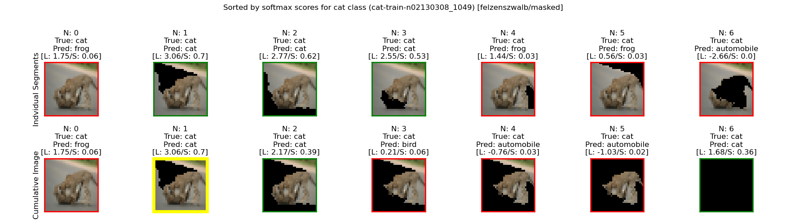 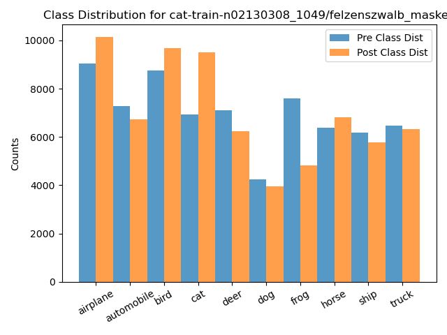
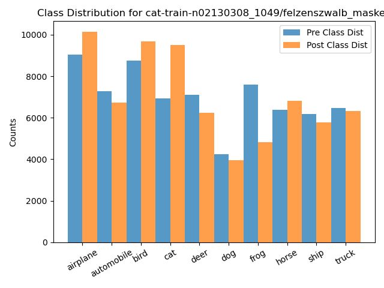
Accuracy: 0.673 Mean Recall 0.673 Precision 0.696 F1 0.666 Target Recall 0.576 Precision 0.51 F1 0.541 Orig Pred Recall 0.293 Precision 0.852 F1 0.436


Accuracy: 0.673 Mean Recall 0.673 Precision 0.703 F1 0.667 Target Recall 0.641 Precision 0.44 F1 0.522 Orig Pred Recall 0.26 Precision 0.849 F1 0.398


Accuracy: 0.672 Mean Recall 0.672 Precision 0.709 F1 0.67 Target Recall 0.708 Precision 0.399 F1 0.511 Orig Pred Recall 0.365 Precision 0.842 F1 0.509
 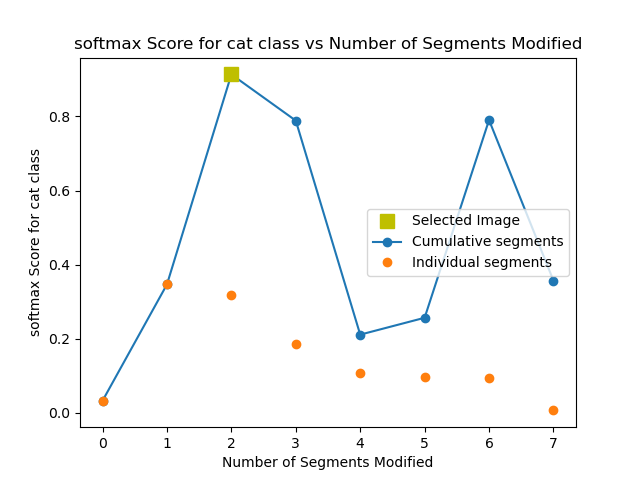
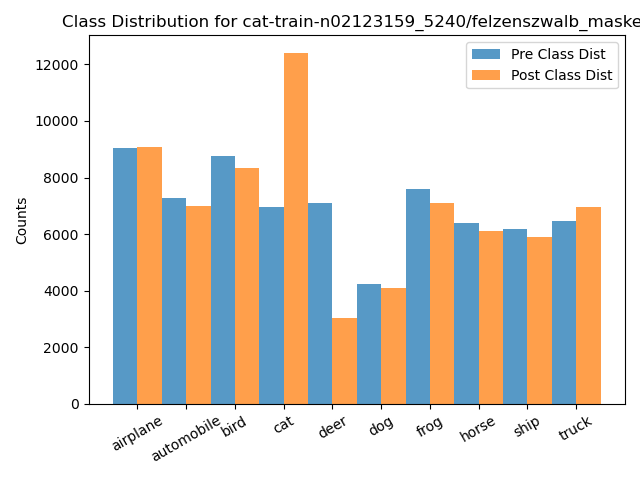
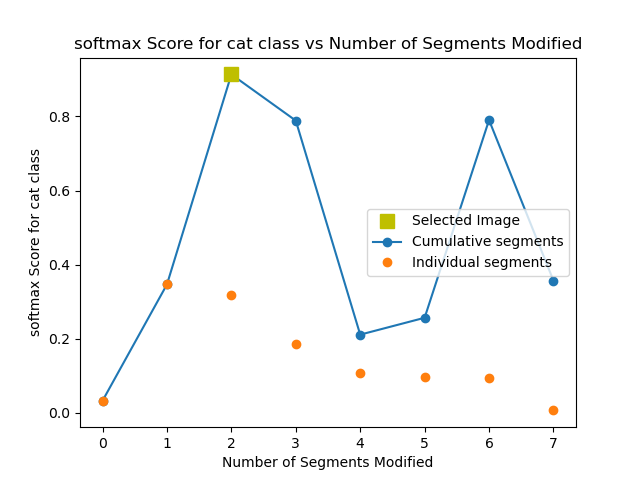
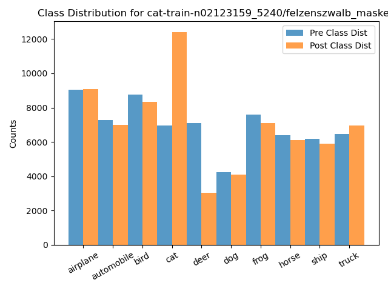
Accuracy: 0.671 Mean Recall 0.671 Precision 0.701 F1 0.662 Target Recall 0.636 Precision 0.445 F1 0.524 Orig Pred Recall 0.227 Precision 0.869 F1 0.359
 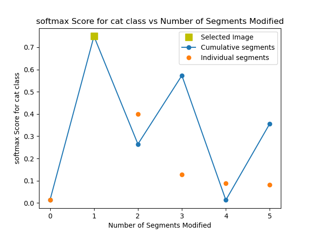
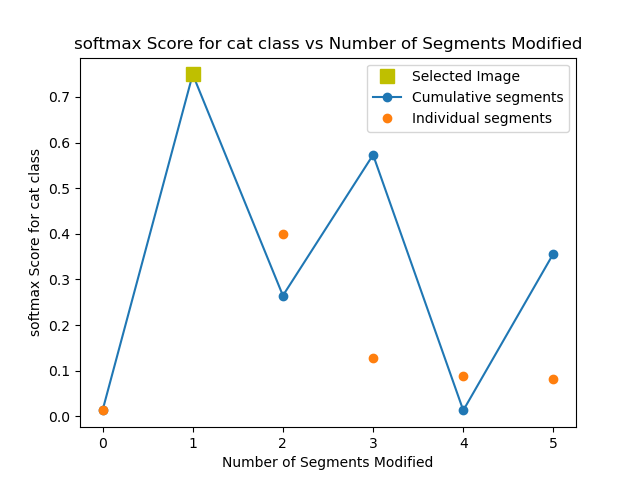

Accuracy: 0.67 Mean Recall 0.67 Precision 0.701 F1 0.672 Target Recall 0.66 Precision 0.459 F1 0.542 Orig Pred Recall 0.702 Precision 0.881 F1 0.781
 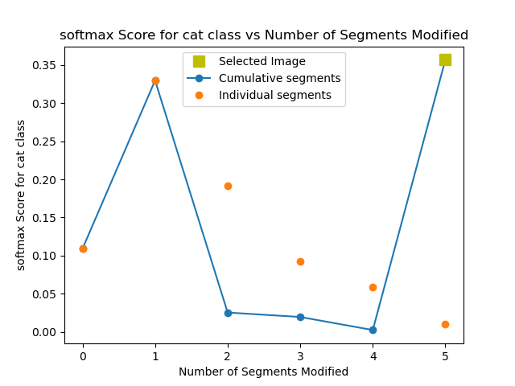
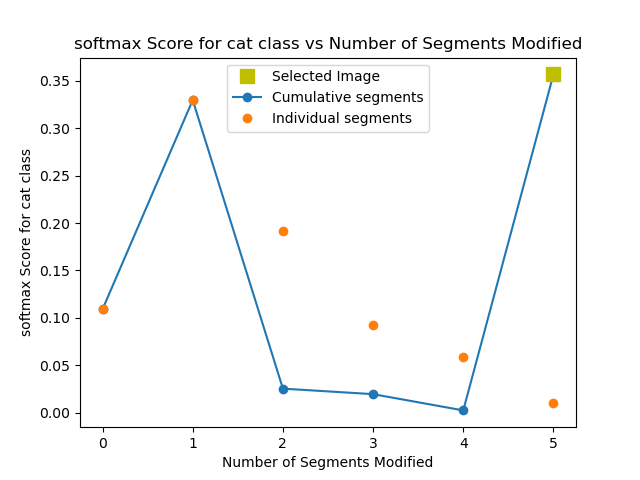

Accuracy: 0.67 Mean Recall 0.67 Precision 0.717 F1 0.672 Target Recall 0.76 Precision 0.373 F1 0.5 Orig Pred Recall 0.376 Precision 0.825 F1 0.517
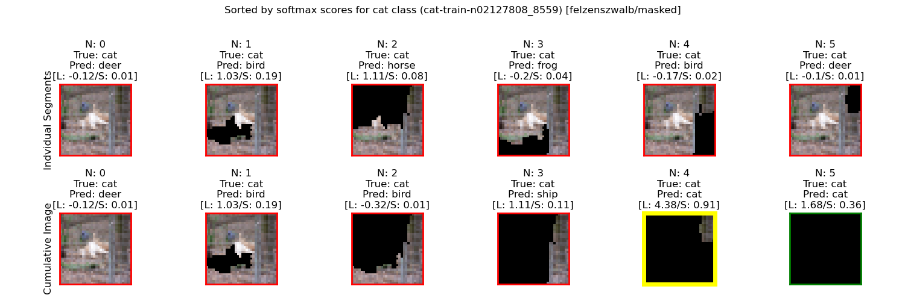 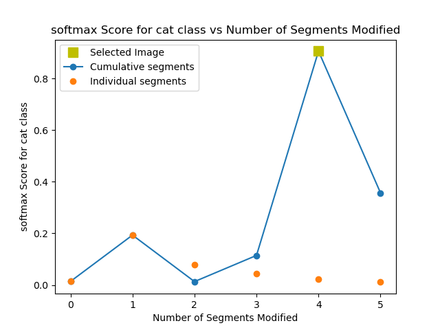 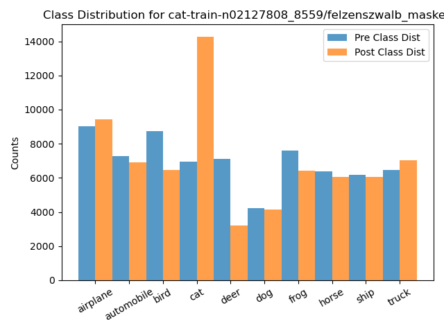Accuracy: 0.67 Mean Recall 0.67 Precision 0.712 F1 0.667 Target Recall 0.719 Precision 0.402 F1 0.515 Orig Pred Recall 0.568 Precision 0.807 F1 0.667
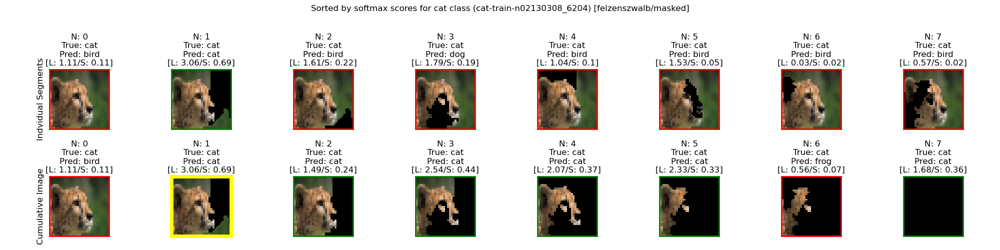 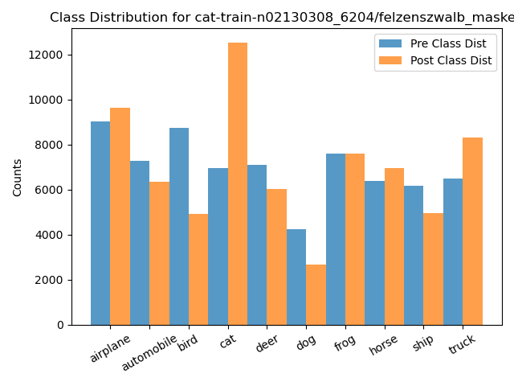
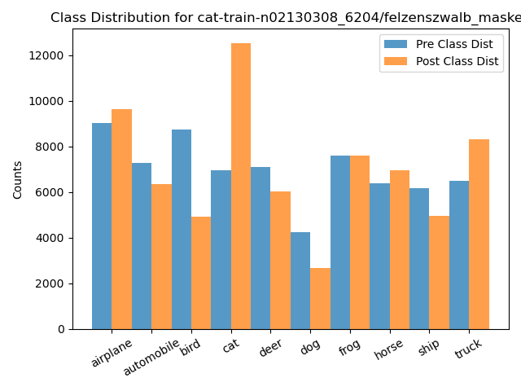
Accuracy: 0.663 Mean Recall 0.663 Precision 0.713 F1 0.659 Target Recall 0.704 Precision 0.383 F1 0.496 Orig Pred Recall 0.264 Precision 0.909 F1 0.41

 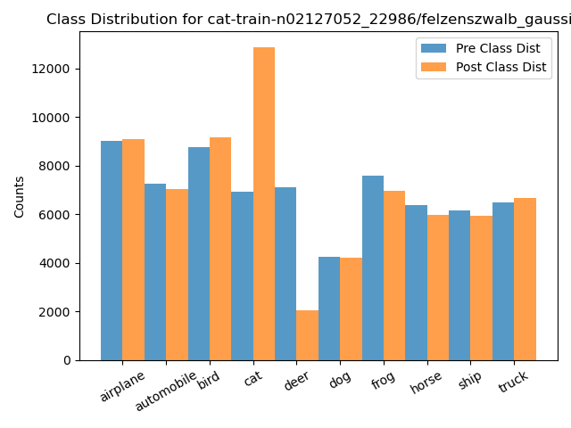
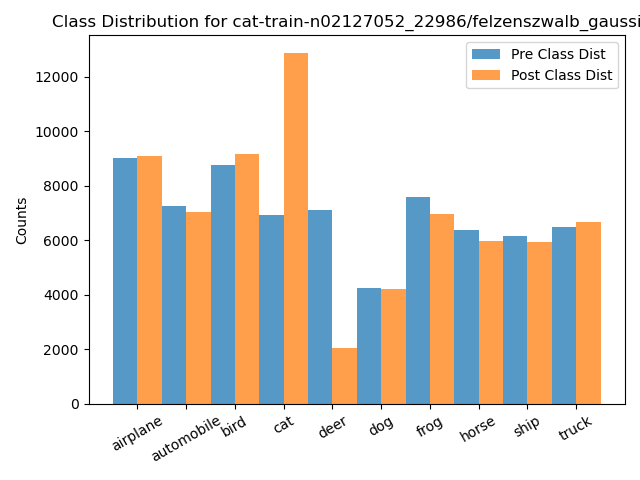
Accuracy: 0.658 Mean Recall 0.658 Precision 0.717 F1 0.648 Target Recall 0.75 Precision 0.395 F1 0.517 Orig Pred Recall 0.179 Precision 0.92 F1 0.3


Accuracy: 0.646 Mean Recall 0.646 Precision 0.656 F1 0.618 Target Recall 0.635 Precision 0.385 F1 0.48 Orig Pred Recall 0.0 Precision 0.5 F1 0.0
 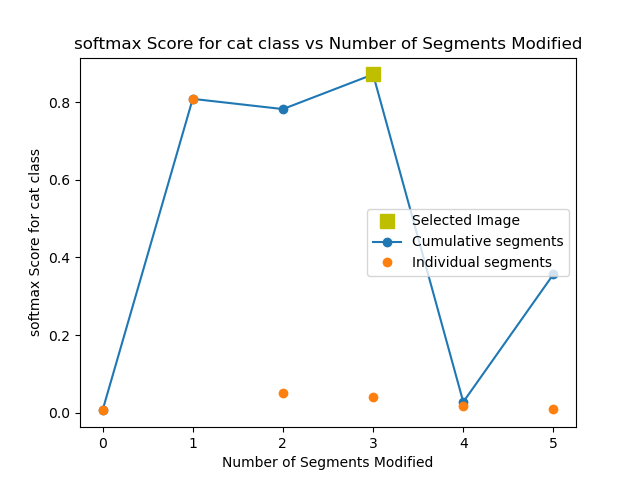
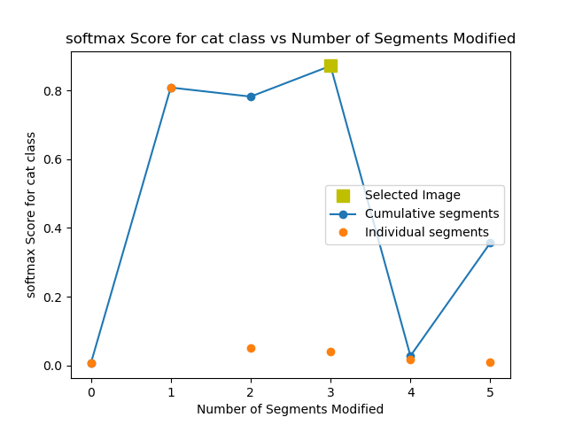

Accuracy: 0.645 Mean Recall 0.645 Precision 0.602 F1 0.615 Target Recall 0.598 Precision 0.41 F1 0.487 Orig Pred Recall 0.0 Precision 0.0 F1 0.0


Accuracy: 0.636 Mean Recall 0.636 Precision 0.716 F1 0.611 Target Recall 0.705 Precision 0.333 F1 0.452 Orig Pred Recall 0.0 Precision 1.0 F1 0.0


Accuracy: 0.636 Mean Recall 0.636 Precision 0.609 F1 0.609 Target Recall 0.659 Precision 0.352 F1 0.459 Orig Pred Recall 0.0 Precision 0.0 F1 0.0


Accuracy: 0.635 Mean Recall 0.635 Precision 0.612 F1 0.609 Target Recall 0.692 Precision 0.343 F1 0.459 Orig Pred Recall 0.0 Precision 0.0 F1 0.0


Accuracy: 0.635 Mean Recall 0.635 Precision 0.618 F1 0.611 Target Recall 0.728 Precision 0.328 F1 0.453 Orig Pred Recall 0.0 Precision 0.0 F1 0.0
 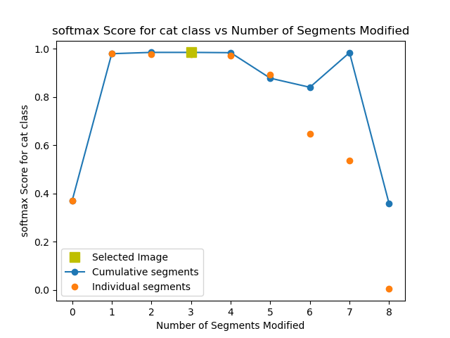
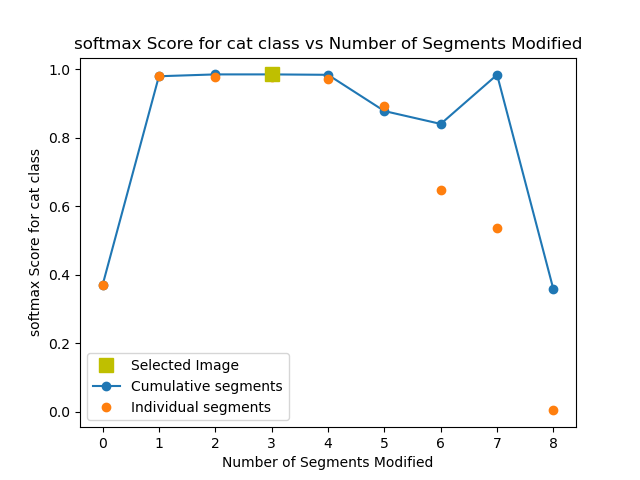

Accuracy: 0.634 Mean Recall 0.634 Precision 0.599 F1 0.603 Target Recall 0.652 Precision 0.447 F1 0.53 Orig Pred Recall 0.0 Precision 0.0 F1 0.0
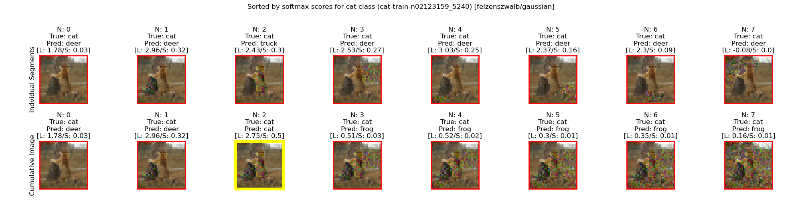

Accuracy: 0.633 Mean Recall 0.633 Precision 0.624 F1 0.612 Target Recall 0.751 Precision 0.316 F1 0.445 Orig Pred Recall 0.0 Precision 0.0 F1 0.0
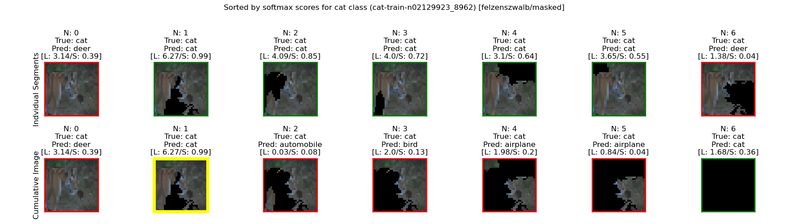

Accuracy: 0.633 Mean Recall 0.633 Precision 0.611 F1 0.606 Target Recall 0.679 Precision 0.352 F1 0.464 Orig Pred Recall 0.0 Precision 0.0 F1 0.0


Accuracy: 0.631 Mean Recall 0.631 Precision 0.615 F1 0.606 Target Recall 0.677 Precision 0.341 F1 0.454 Orig Pred Recall 0.0 Precision 0.0 F1 0.0


Accuracy: 0.629 Mean Recall 0.629 Precision 0.727 F1 0.607 Target Recall 0.756 Precision 0.314 F1 0.444 Orig Pred Recall 0.011 Precision 1.0 F1 0.021


Accuracy: 0.628 Mean Recall 0.628 Precision 0.629 F1 0.609 Target Recall 0.763 Precision 0.304 F1 0.435 Orig Pred Recall 0.0 Precision 0.0 F1 0.0


Accuracy: 0.627 Mean Recall 0.627 Precision 0.609 F1 0.605 Target Recall 0.699 Precision 0.317 F1 0.437 Orig Pred Recall 0.0 Precision 0.0 F1 0.0

 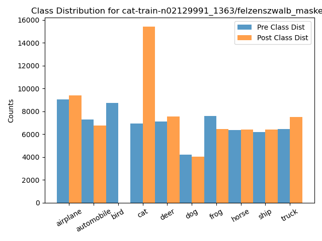
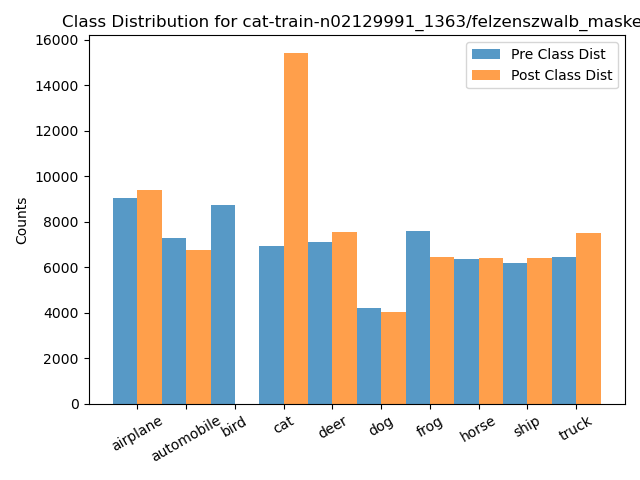
Accuracy: 0.627 Mean Recall 0.627 Precision 0.633 F1 0.61 Target Recall 0.777 Precision 0.3 F1 0.433 Orig Pred Recall 0.0 Precision 0.0 F1 0.0


Accuracy: 0.627 Mean Recall 0.627 Precision 0.631 F1 0.609 Target Recall 0.766 Precision 0.304 F1 0.435 Orig Pred Recall 0.0 Precision 0.0 F1 0.0
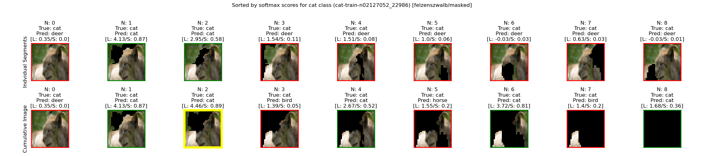

Accuracy: 0.626 Mean Recall 0.626 Precision 0.716 F1 0.607 Target Recall 0.708 Precision 0.296 F1 0.417 Orig Pred Recall 0.008 Precision 1.0 F1 0.015


Accuracy: 0.622 Mean Recall 0.622 Precision 0.733 F1 0.617 Target Recall 0.779 Precision 0.281 F1 0.413 Orig Pred Recall 0.089 Precision 0.994 F1 0.164


Accuracy: 0.622 Mean Recall 0.622 Precision 0.617 F1 0.602 Target Recall 0.718 Precision 0.299 F1 0.422 Orig Pred Recall 0.0 Precision 0.0 F1 0.0
 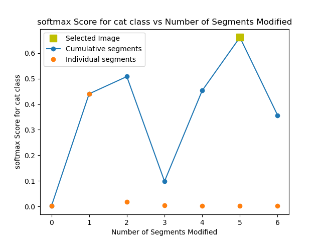
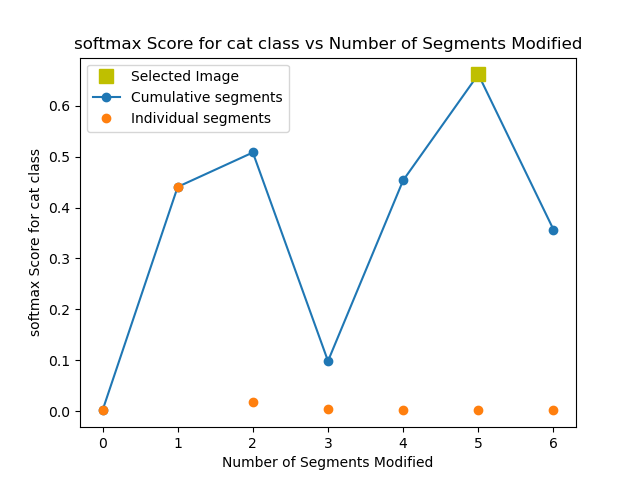

Accuracy: 0.621 Mean Recall 0.621 Precision 0.609 F1 0.595 Target Recall 0.68 Precision 0.319 F1 0.434 Orig Pred Recall 0.0 Precision 0.0 F1 0.0


Accuracy: 0.618 Mean Recall 0.618 Precision 0.597 F1 0.594 Target Recall 0.693 Precision 0.322 F1 0.44 Orig Pred Recall 0.0 Precision 0.0 F1 0.0


Accuracy: 0.618 Mean Recall 0.618 Precision 0.664 F1 0.598 Target Recall 0.588 Precision 0.315 F1 0.41 Orig Pred Recall 0.024 Precision 0.687 F1 0.047
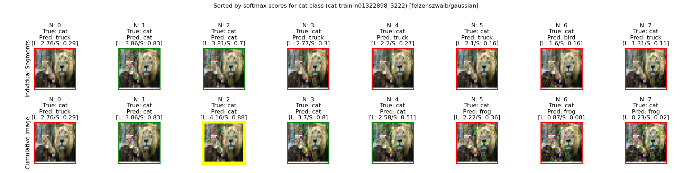

Accuracy: 0.614 Mean Recall 0.614 Precision 0.609 F1 0.595 Target Recall 0.765 Precision 0.303 F1 0.434 Orig Pred Recall 0.0 Precision 0.0 F1 0.0


Accuracy: 0.614 Mean Recall 0.614 Precision 0.593 F1 0.59 Target Recall 0.689 Precision 0.324 F1 0.441 Orig Pred Recall 0.0 Precision 0.0 F1 0.0
 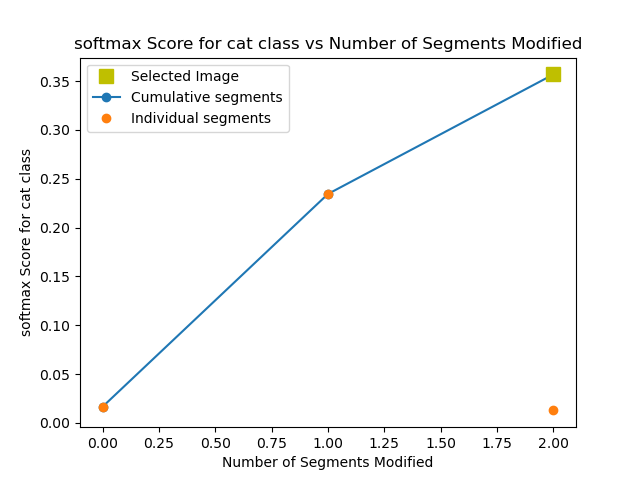
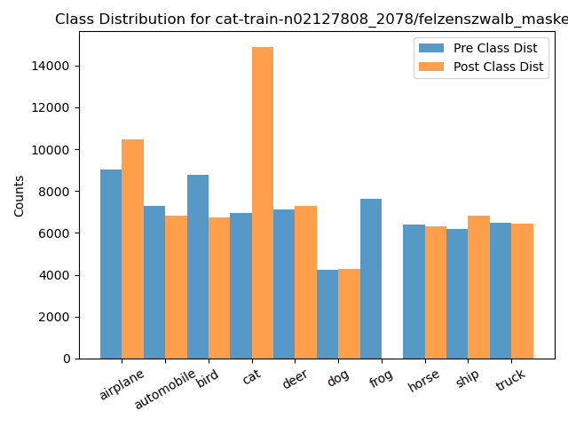
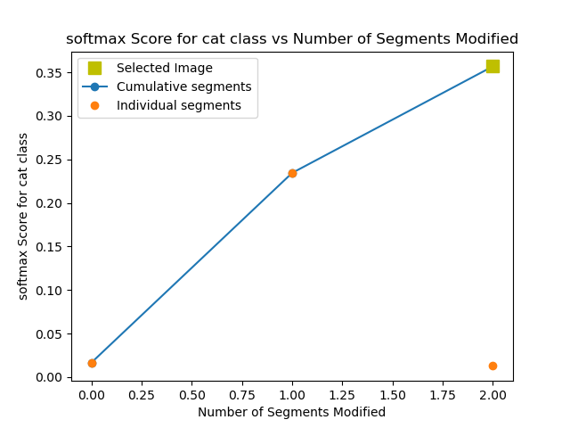
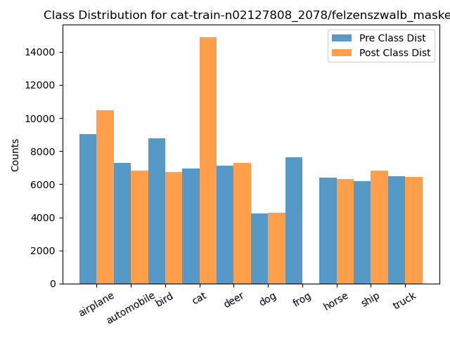
Accuracy: 0.613 Mean Recall 0.613 Precision 0.648 F1 0.6 Target Recall 0.833 Precision 0.28 F1 0.419 Orig Pred Recall 0.0 Precision 0.0 F1 0.0


Accuracy: 0.61 Mean Recall 0.61 Precision 0.616 F1 0.593 Target Recall 0.798 Precision 0.292 F1 0.428 Orig Pred Recall 0.0 Precision 0.0 F1 0.0


Accuracy: 0.609 Mean Recall 0.609 Precision 0.616 F1 0.593 Target Recall 0.8 Precision 0.288 F1 0.424 Orig Pred Recall 0.0 Precision 0.0 F1 0.0
 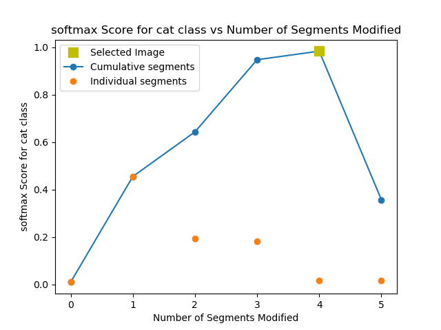
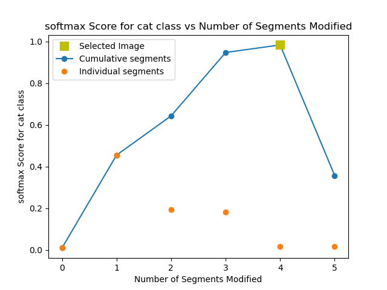

Accuracy: 0.608 Mean Recall 0.608 Precision 0.647 F1 0.597 Target Recall 0.852 Precision 0.277 F1 0.418 Orig Pred Recall 0.0 Precision 0.0 F1 0.0
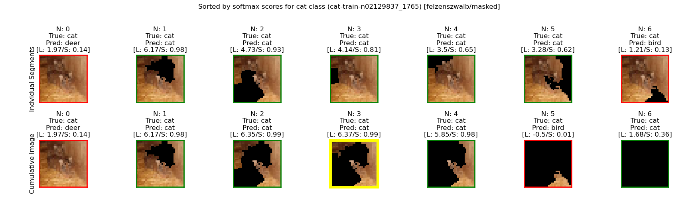

Accuracy: 0.606 Mean Recall 0.606 Precision 0.612 F1 0.592 Target Recall 0.697 Precision 0.275 F1 0.394 Orig Pred Recall 0.0 Precision 0.0 F1 0.0


Accuracy: 0.605 Mean Recall 0.605 Precision 0.646 F1 0.599 Target Recall 0.829 Precision 0.258 F1 0.393 Orig Pred Recall 0.0 Precision 0.0 F1 0.0


Accuracy: 0.604 Mean Recall 0.604 Precision 0.651 F1 0.595 Target Recall 0.858 Precision 0.272 F1 0.413 Orig Pred Recall 0.0 Precision 0.0 F1 0.0

 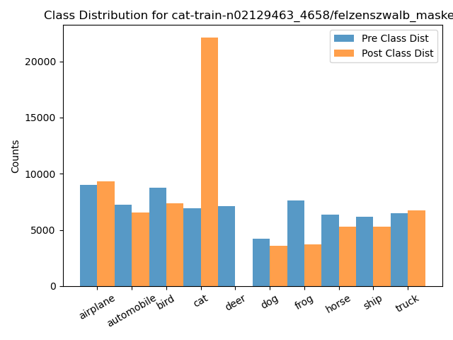
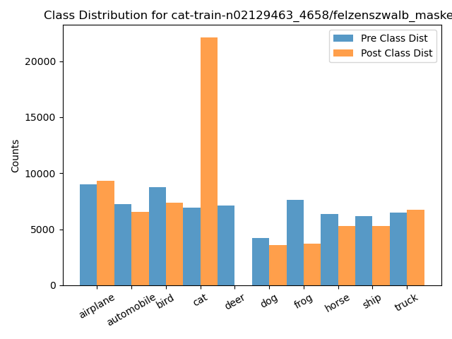
Accuracy: 0.604 Mean Recall 0.604 Precision 0.701 F1 0.582 Target Recall 0.612 Precision 0.312 F1 0.413 Orig Pred Recall 0.001 Precision 1.0 F1 0.003
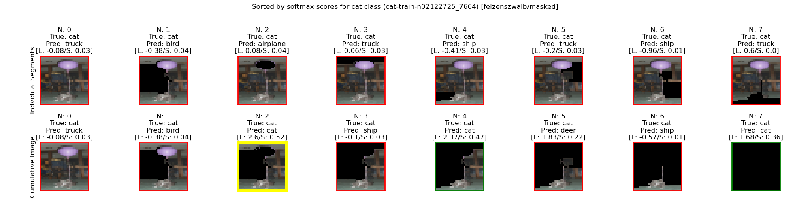 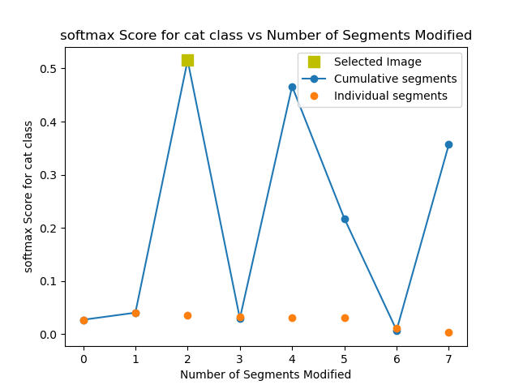
Accuracy: 0.603 Mean Recall 0.603 Precision 0.624 F1 0.588 Target Recall 0.832 Precision 0.282 F1 0.422 Orig Pred Recall 0.0 Precision 0.0 F1 0.0


Accuracy: 0.599 Mean Recall 0.599 Precision 0.604 F1 0.589 Target Recall 0.648 Precision 0.247 F1 0.358 Orig Pred Recall 0.0 Precision 0.0 F1 0.0


Accuracy: 0.595 Mean Recall 0.595 Precision 0.611 F1 0.587 Target Recall 0.675 Precision 0.244 F1 0.359 Orig Pred Recall 0.0 Precision 0.0 F1 0.0

 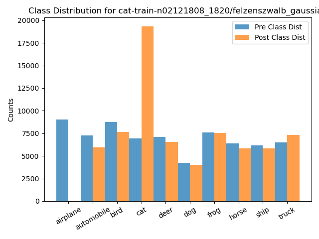
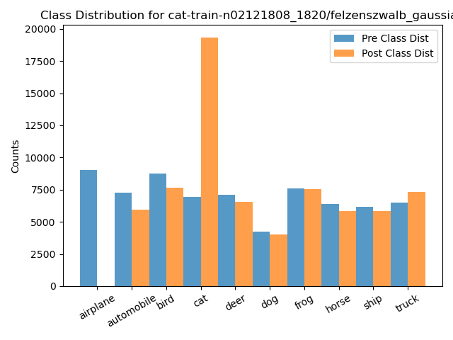
Accuracy: 0.592 Mean Recall 0.592 Precision 0.758 F1 0.587 Target Recall 0.841 Precision 0.243 F1 0.377 Orig Pred Recall 0.002 Precision 1.0 F1 0.004


Accuracy: 0.587 Mean Recall 0.587 Precision 0.632 F1 0.581 Target Recall 0.728 Precision 0.239 F1 0.36 Orig Pred Recall 0.0 Precision 0.0 F1 0.0


Accuracy: 0.585 Mean Recall 0.585 Precision 0.659 F1 0.587 Target Recall 0.85 Precision 0.234 F1 0.366 Orig Pred Recall 0.0 Precision 0.0 F1 0.0


Accuracy: 0.576 Mean Recall 0.576 Precision 0.631 F1 0.549 Target Recall 0.834 Precision 0.259 F1 0.395 Orig Pred Recall 0.0 Precision 0.0 F1 0.0
 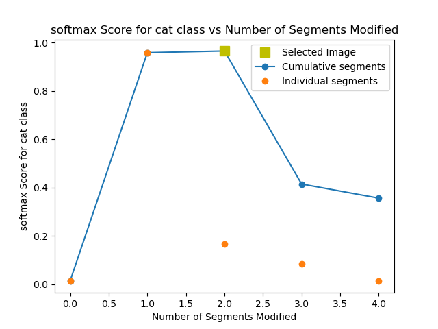
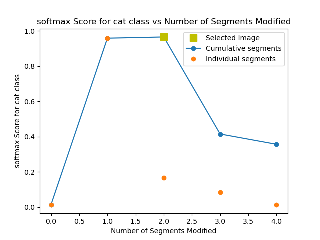

Accuracy: 0.566 Mean Recall 0.566 Precision 0.527 F1 0.523 Target Recall 0.753 Precision 0.354 F1 0.482 Orig Pred Recall 0.0 Precision 0.0 F1 0.0


Accuracy: 0.54 Mean Recall 0.54 Precision 0.552 F1 0.513 Target Recall 0.883 Precision 0.224 F1 0.357 Orig Pred Recall 0.0 Precision 0.0 F1 0.0


Accuracy: 0.486 Mean Recall 0.486 Precision 0.606 F1 0.48 Target Recall 0.941 Precision 0.18 F1 0.303 Orig Pred Recall 0.0 Precision 0.0 F1 0.0
 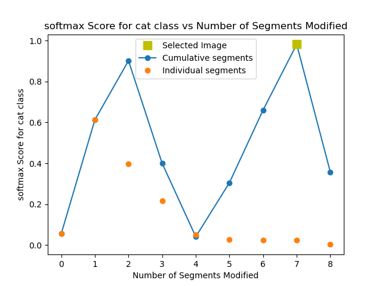
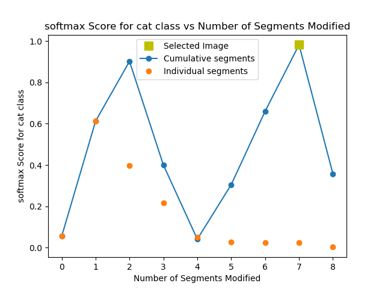

Accuracy: 0.45 Mean Recall 0.45 Precision 0.573 F1 0.454 Target Recall 0.87 Precision 0.176 F1 0.293 Orig Pred Recall 0.0 Precision 0.0 F1 0.0
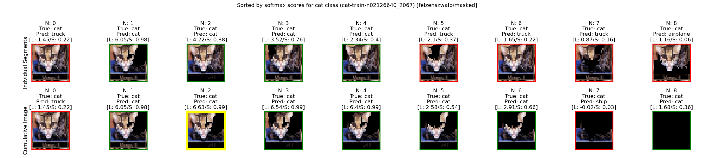